- បង្ហាញសញ្ញាណរង្វង់និងធាតុសំខាន់ៗ
- កំណត់បរិមាត្ររង្វង់និងផ្ទៃក្រឡាថាស
- កំណត់ប្រវែងធ្នូនៃរង្វង់និងរកផ្ទៃក្រឡាចម្រៀកថាស ។
1. សញ្ញាណរង្វង់
រូបមុខនាឡិកាផ្ដល់នូវសញ្ញាណរង្វង់ ។
គេមានចំណុចនឹង \(\displaystyle O\) មួយ គេដៅចំណុចឱ្យបានយ៉ាងតិច 20 ដែលស្ថិតនៅចម្ងាយ \(\displaystyle 2cm\) ពីចំណុច \(\displaystyle O\) ។ រួចភ្ជាប់ចំណុចទាំងនោះ ។
គេសង្កេតឃើញថា គ្រប់ចំណុចដែលស្ថិតនៅចម្ងាយ \(\displaystyle 2cm\) ពី \(\displaystyle O\) ស្ថិតនៅលើខ្សែគោងបិទជិតហៅថា រង្វង់ ។
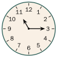
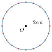
| ជាទូទៅ រង្វង់ជាខ្សែគោងបិទជិតដែលគ្រប់ចំណុចនៃខ្សែគោង |
| ស្ថិតនៅស្មើចម្ងាយពីចំណុចនឹងមួយហៅថា ផ្ចិតនៃ |
| រង្វង់ ។ |
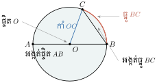
2. បរិមាត្ររង្វង់
ប្រវែងជុំវិញរង្វង់ហៅថា បរិមាត្ររង្វង់ ។
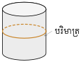
គេយកកង 5 ដែលមានអង្កត់ផ្ចិតខុសៗគ្នាគិតជា \(\displaystyle cm\) មកបង្វិលដោយមិនអិលនៅ លើម៉ែត្រឈើមួយ រួចវាស់អង្កត់ផ្ចិតនិងបរិមាត្ររង្វង់នៃថាសនីមួយៗ គេបានលទ្ធផលដូចតារាងក្រោម :
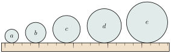
▶ មើលរូបមានចលនា៖ ក្រឡុកថាសដើម្បីឃើញ π
| រង្វង់ | \(\displaystyle a\) | \(\displaystyle b\) | \(\displaystyle c\) | \(\displaystyle d\) | \(\displaystyle e\) |
| អង្កត់ផ្ចិត \(\displaystyle d =\) | 4 | 6 | 8 | 10 | 12 |
| បរិមាត្រ \(\displaystyle p =\) | 12.5 | 19 | 25.1 | 31.4 | 37.8 |
| \(\displaystyle p \div d =\) | 3.12 | 3.16 | 3.13 | 3.14 | 3.15 |
គេឃើញថា ផលធៀបមានតម្លៃប្រហាក់ប្រហែលគ្នា ។ គេតាងតម្លៃប្រហែលនេះដោយ “\(\displaystyle \pi\)” អានថា “ពី” ស្មើនឹង \(\displaystyle 3.1416 ...\) ។ គេបាន \(\displaystyle \frac{p}{d} = \pi\) , \(\displaystyle p = \pi d\) ។
| ជាទូទៅ រង្វង់ដែលមានកាំ \(\displaystyle R\) ឬ អង្កត់ផ្ចិត \(\displaystyle d = 2R\) មានបរិមាត្រ |
| \(\displaystyle p = 2\pi R\) , \(\displaystyle \pi \approx 3.1416 \approx 3.14\) ឬ \(\displaystyle \pi \approx \frac{22}{7}\) ។ |
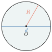
គណនាបរិមាត្ររង្វង់ដែលមានកាំស្មើនឹង \(\displaystyle 14cm\) ដោយយក \(\displaystyle \pi \approx \frac{22}{7}\) ។
បរិមាត្ររង្វង់ \(\displaystyle p = 2\pi R = 2 \times \frac{22}{7} \times 14 = 88cm\) ។
គណនាកាំរង្វង់ដោយស្គាល់បរិមាត្រ \(\displaystyle p = 219.8cm\) និងយក \(\displaystyle \pi \approx 3.14\) ។
ដោយបរិមាត្ររង្វង់ \(\displaystyle p = 2\pi R\) , \(\displaystyle R = \frac{p}{2\pi} = \frac{219.8}{2 \times 3.14} = 35cm\) ។
គណនាអង្កត់ផ្ចិតនៃរង្វង់ដោយស្គាល់បរិមាត្រ \(\displaystyle p = 25cm\) និងយក \(\displaystyle \pi \approx 3.14\) ។
ដោយបរិមាត្ររង្វង់ \(\displaystyle p = \pi d\) នោះ \(\displaystyle d = \frac{p}{\pi} = \frac{25cm}{3.14} = 7.96cm\) ។
កង់យោងឯកកច្ចទី 1 ត្រូវបានស្ថាបនាអំពី ដែកក្នុងឆ្នាំ 1893 នៅឯកន្លែងតាំងពិពណ៌ពិភពលោកក្នុង ក្រុងស៊ីកាហ្គោ ។ វាមានកាំប្រវែង 125 feet ឬ \(\displaystyle 38.1m\) ទម្ងន់ 1200 តោន ហើយអាចផ្ទុកមនុស្សបាន 2100 នាក់ ។ បើគេ ចំណាយ 50 សេនក្នុងម្នាក់ គេអាចឡើងជិះ កង់យោងឯកកច្ចបានរយៈពេល 20 នាទី ។ តើអ្នកជិះ កង់យោងឯកកច្ចបានប្រវែងប៉ុន្មានក្នុងមួយជុំ ?
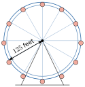
\(\displaystyle p = 2\pi r \approx 2 \times 3.14 \times 125 \text{ feet} = 785 \text{ feet}\)
ដូចនេះ អ្នកជិះធ្វើដំណើរបានប្រវែង \(\displaystyle 785 \text{ feet}\) ក្នុង 1 ជុំ ។
\(\displaystyle 1 \text{ feet} = 30.48cm\) ។
គណនាបរិមាត្រនៃរូបខាងក្រោមនេះ ដោយយក \(\displaystyle \pi \approx \frac{22}{7}\) ។
- ក.
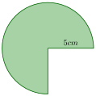
- ខ.
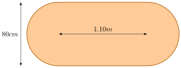
3. ផ្ទៃក្រឡាថាស
គូសរង្វង់កាំ \(\displaystyle R\) នៅលើក្រដាសកាតុង រួចកាត់ថាសឱ្យបានជា 16 ចំណែកស្មើគ្នា ហើយ ផ្គុំចំណែកទាំងនោះឱ្យមានរាងជាចតុកោណកែង ។ ចតុកោណកែងនេះមានវិមាត្រ \(\displaystyle \pi R\) និង \(\displaystyle R\) ។
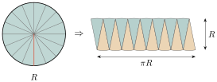
ដូចនេះផ្ទៃក្រឡាថាស = ផ្ទៃក្រឡាចតុកោណកែង
\(\displaystyle S = \pi R \times R = \pi R^2\) ។
| រូបមន្ត : ផ្ទៃក្រឡាថាសដែលមានប្រវែងកាំ \(\displaystyle R\) កំណត់ដោយ \(\displaystyle S = \pi R^2\) ។ |
\(\displaystyle d = 2R\) នោះ \(\displaystyle R = \frac{d}{2} \Rightarrow S = \frac{\pi d^2}{4}\) ។
គណនាផ្ទៃក្រឡាថាសដែលមានប្រវែងកាំ \(\displaystyle 10cm\) ដោយយក \(\displaystyle \pi \approx 3.141\) ។
តាមរូបមន្ត ផ្ទៃក្រឡាថាសដែលមានកាំ \(\displaystyle R\) កំណត់ដោយ \(\displaystyle S = \pi R^2 = 3.141 \times 10^2 = 314.1cm^2\) ។
គណនាផ្ទៃក្រឡាថាសដែលមានអង្កត់ផ្ចិតរង្វង់ \(\displaystyle 14cm\) ដោយយក \(\displaystyle \pi \approx \frac{22}{7}\) ។
តាមរូបមន្ត ផ្ទៃក្រឡាថាសដែលមានអង្កត់ផ្ចិត \(\displaystyle d\) កំណត់ដោយ \(\displaystyle S = \frac{\pi d^2}{4} = \frac{22}{7} \times \frac{14^2}{4} = 154cm^2\) ។
គណនាបរិមាត្រនិងផ្ទៃក្រឡានៃរូបខាងស្ដាំនេះ ដោយយក \(\displaystyle \pi \approx \frac{22}{7}\) ។
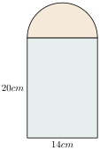
គេចែករូបនេះជាពីរផ្នែក
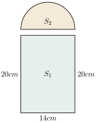
បរិមាត្រផ្នែកទី1 \(\displaystyle p_1 = 20 + 20 + 14 = 54cm\) និងបរិមាត្រផ្នែកទី2
\(\displaystyle p_2 = \frac{1}{2}\pi d = \frac{1}{2} \times \frac{22}{7} \times 14 = 22cm\) ។ បរិមាត្រនៃរូបគឺ \(\displaystyle p = p_1 + p_2 = 54 + 22 = 76cm\) ។
ផ្ទៃក្រឡា ចតុកោណកែង \(\displaystyle S_1 = 20 \times 14 = 280cm^2\)
ផ្ទៃក្រឡាកន្លះថាស \(\displaystyle S_2 = \frac{1}{2} \times \frac{1}{4} \times \frac{22}{7} \times 14^2 = 77cm^2\)
ផ្ទៃក្រឡាសរុបគឺ \(\displaystyle S = S_1 + S_2 = 280 + 77 = 357cm^2\) ។
គណនាផ្ទៃក្រឡាផ្នែកឆូតនៃរូបខាងស្ដាំនេះដោយយក \(\displaystyle \pi = 3.14\) ។
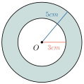
ផ្ទៃក្រឡាថាសធំ \(\displaystyle S_1 = \pi R^2 = \pi 5^2 \approx 3.14 \times 25 \approx 78.5cm^2\) ។
ផ្ទៃក្រឡាថាសតូច \(\displaystyle S_2 = \pi R^2 = \pi 3^2 \approx 3.14 \times 9 \approx 28.26cm^2\) ។
នោះផ្ទៃក្រឡាផ្នែកឆូតគឺ \(\displaystyle S = S_1 - S_2 = 78.5 - 28.26 = 50.24cm^2\) ។
គណនាផ្ទៃក្រឡាផ្នែកឆូតនៃរូបខាងក្រោមនេះ ដោយយក \(\displaystyle \pi \approx \frac{22}{7}\) ។
- ក.
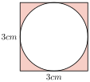
- ខ.
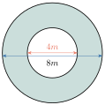
4. ផ្ទៃក្រឡាចម្រៀកថាស
បើគេកាត់យកដុំមួយចំណិតដូច រូបខាងស្ដាំ ចំណិតនេះគឺឧទាហរណ៍មួយនៃ ចម្រៀកថាស ។
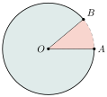
4.1 និយមន័យ
ចម្រៀកថាស ជាផ្នែកមួយនៃថាសដែលខណ្ឌដោយកាំពីរ ។ មុំដែលផ្គុំឡើងដោយកាំទាំងពីរ នៃរង្វង់ហៅថាមុំផ្ចិតនៃចម្រៀកថាស ។
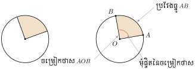
4.2 ប្រវែងធ្នូនៃរង្វង់
គណនាប្រវែងធ្នូ \(\displaystyle AB\) នៃរង្វង់ដែលមានកាំរង្វង់ \(\displaystyle 5cm\) ត្រូវនឹងមុំផ្ចិត \(\displaystyle 45^\circ\) ។
មុំ \(\displaystyle 360^\circ\) ត្រូវនឹងប្រវែងធ្នូនៃបរិមាត្ររង្វង់ \(\displaystyle 2\pi R\)
បើមុំ \(\displaystyle 1^\circ\) ត្រូវនឹងប្រវែងធ្នូនៃរង្វង់ \(\displaystyle \frac{2\pi R}{360^\circ}\)
បើមុំ \(\displaystyle 45^\circ\) ត្រូវនឹងប្រវែងធ្នូនៃរង្វង់ \(\displaystyle AB = \frac{2\pi R}{360^\circ} \times 45^\circ = \frac{2\pi 5}{360^\circ} \times 45^\circ = \frac{5\pi}{4}cm\) ។
ដូចនេះ ប្រវែងធ្នូ \(\displaystyle AB = \frac{5\pi}{4}cm\) ។
| ជាទូទៅ ប្រវែងធ្នូ \(\displaystyle AB\) នៃរង្វង់កាំ \(\displaystyle R\) និងមុំផ្ចិត \(\displaystyle \alpha^\circ\) កំណត់ដោយប្រវែងធ្នូ |
| \(\displaystyle AB = 2\pi R \times \frac{\alpha^\circ}{360^\circ}\) ។ |
គណនាប្រវែងធ្នូ \(\displaystyle AB\) នៃរង្វង់ដែលមានកាំរង្វាស់ \(\displaystyle 5cm\) ត្រូវនឹងមុំផ្ចិត \(\displaystyle 30^\circ\) ។
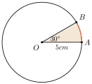
គេបាន \(\displaystyle AB = 2\pi R \times \frac{30^\circ}{360^\circ} = 2\pi 5 \times \frac{30}{360} = \frac{5\pi}{6}cm\) ។
ដូចនេះ ប្រវែងធ្នូ \(\displaystyle AB = \frac{5\pi}{6}cm\) ។
គណនាបរិមាត្រនៃចម្រៀកថាសដែលមានកាំស្មើនឹង \(\displaystyle 12cm\) និងមុំផ្ចិតនៃចម្រៀក ថាសមានរង្វាស់ \(\displaystyle 144^\circ\) ( យក \(\displaystyle \pi \approx 3.14\) ) ។
ប្រវែងធ្នូ \(\displaystyle AB\) នៃរង្វង់ដែលត្រូវនឹងមុំផ្ចិត \(\displaystyle 144^\circ\)
កំណត់ដោយ \(\displaystyle AB = 2 \times 3.14 \times 12cm \times \frac{144^\circ}{360^\circ} = 30.14cm\) ។
បរិមាត្រនៃចម្រៀកថាស \(\displaystyle p = 30.14cm + 12cm + 12cm = 54.14cm\) ។
4.3 ផ្ទៃក្រឡាចម្រៀកថាស
គណនាផ្ទៃក្រឡានៃចម្រៀកថាសដែលមានកាំ រង្វាស់ \(\displaystyle 12cm\) មុំផ្ចិតនៃចម្រៀកថាស \(\displaystyle 45^\circ\) ។
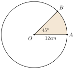
មុំ \(\displaystyle 360^\circ\) ត្រូវនឹងផ្ទៃក្រឡាថាស \(\displaystyle \pi R^2\)
មុំ \(\displaystyle 1^\circ\) ត្រូវនឹងផ្ទៃក្រឡាចម្រៀកថាស \(\displaystyle \frac{\pi R^2}{360^\circ}\)
មុំ \(\displaystyle 45^\circ\) ត្រូវនឹងផ្ទៃក្រឡាចម្រៀកថាស \(\displaystyle S = \frac{\pi R^2}{360^\circ} \times 45^\circ = \frac{\pi \times 12^2}{360^\circ} \times 45^\circ = 18\pi cm^2\) ។
| ជាទូទៅ ផ្ទៃក្រឡាចម្រៀកថាស \(\displaystyle S\) នៃរង្វង់កាំ \(\displaystyle R\) និងមុំផ្ចិតនៃចម្រៀកថាស \(\displaystyle \alpha^\circ\) |
| កំណត់ដោយ \(\displaystyle S = \pi R^2 \times \frac{\alpha^\circ}{360^\circ}\) ។ |
គណនាផ្ទៃក្រឡានៃចម្រៀកថាសដែលមានកាំរង្វាស់ \(\displaystyle 6cm\) មុំផ្ចិតនៃចម្រៀកថាស \(\displaystyle 60^\circ\) ដោយយក \(\displaystyle \pi = 3.14\) ។
ក្នុងរង្វង់កាំ \(\displaystyle 6cm\) ផ្ទៃក្រឡាចម្រៀកថាស \(\displaystyle S\) ដែលត្រូវនឹងមុំផ្ចិតនៃចម្រៀកថាស \(\displaystyle 60^\circ\)
កំណត់ដោយ \(\displaystyle S = \pi 6^2 \times \frac{60^\circ}{360^\circ} = 6\pi cm^2 = 6 \times 3.14cm^2 = 18.84cm^2\) ។
គណនាផ្ទៃក្រឡានិងបរិមាត្រនៃចម្រៀកថាសដែលមានកាំ \(\displaystyle 12.6cm\) និងមុំផ្ចិតនៃ ចម្រៀកថាសមានរង្វាស់ \(\displaystyle 120^\circ\) ( យក \(\displaystyle \pi = \frac{22}{7}\) ) ។
ផ្ទៃក្រឡានៃចម្រៀកថាស \(\displaystyle S = \frac{120^\circ}{360^\circ} \times \pi r^2\)
ដោយស្គាល់ \(\displaystyle \pi = \frac{22}{7}\) និង \(\displaystyle r = 12.6cm\)
គេបាន \(\displaystyle S = \frac{120}{360} \times \frac{22}{7} \times (12.6)^2 cm^2 = 166.32cm^2\) ។
ប្រវែងធ្នូ \(\displaystyle AB\) នៃរង្វង់ដែលត្រូវនឹងមុំផ្ចិត \(\displaystyle 120^\circ\) កំណត់ដោយ
\(\displaystyle AB = 2 \times \frac{22}{7} \times 12.6cm \times \frac{120^\circ}{360^\circ} = 26.4cm\) ។
បរិមាត្រនៃចម្រៀកថាស \(\displaystyle p = 26.4cm + 12.6cm + 12.6cm = 51.6cm\) ។
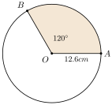
គណនាផ្ទៃក្រឡាផ្នែកឆូតនៃរូបខាងក្រោម ដោយយក \(\displaystyle \pi \approx \frac{22}{7}\) ។
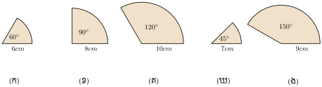
លំហាត់
- រកបរិមាត្រនៃរង្វង់មួយដោយស្គាល់ប្រវែងកាំរង្វង់ \(\displaystyle 10cm\) ។
- រកបរិមាត្រនៃរង្វង់មួយដោយស្គាល់ប្រវែងអង្កត់ផ្ចិត \(\displaystyle 16cm\) ។
- រកកាំនៃរង្វង់មួយដោយស្គាល់បរិមាត្រស្មើ \(\displaystyle 33.91cm\) ។
- រកអង្កត់ផ្ចិតនៃរង្វង់មួយដោយស្គាល់បរិមាត្រស្មើ \(\displaystyle 33.91cm\) ។
គណនាបរិមាត្រនៃរង្វង់និងផ្ទៃក្រឡាថាសដែលមានកាំមានរង្វាស់ដូចខាងក្រោម :
ក. \(\displaystyle 7cm\) ខ. \(\displaystyle 28cm\) គ. \(\displaystyle 16.8cm\) ឃ. \(\displaystyle 63cm\)
គណនាបរិមាត្រនៃរង្វង់និងផ្ទៃក្រឡាកន្លះថាសដែលមានកាំមានរង្វាស់ដូចខាងក្រោម :
ក. \(\displaystyle 8.4cm\) ខ. \(\displaystyle 14cm\) គ. \(\displaystyle 21cm\) ឃ. \(\displaystyle 35cm\)
គណនាផ្ទៃក្រឡាថាសដែលមានបរិមាត្ររង្វង់មានរង្វាស់ដូចខាងក្រោម :
ក. \(\displaystyle 11cm\) ខ. \(\displaystyle 21cm\) គ. \(\displaystyle 30cm\) ឃ. \(\displaystyle 1m\)
គណនាកាំរង្វង់ដោយស្គាល់ផ្ទៃក្រឡាថាសដូចខាងក្រោម :
ក. \(\displaystyle 154cm^2\) ខ. \(\displaystyle 616cm^2\) គ. \(\displaystyle 1386cm^2\)
គណនាបរិមាត្រនៃរង្វង់ដោយស្គាល់ផ្ទៃក្រឡាថាសដូចខាងក្រោម :
ក. \(\displaystyle 2464cm^2\) ខ. \(\displaystyle 3850cm^2\) គ. \(\displaystyle 5544cm^2\) ។
- អង្កត់ផ្ចិតនៃកង់មួយមានកាំរង្វាស់ \(\displaystyle 6dm\) ។ គណនាចម្ងាយផ្លូវធ្វើដំណើរពីកង់វិលបាន 140 ជុំ ។
- តើកង់រថយន្តដែលមានកាំ \(\displaystyle 28dm\) វិលបានប៉ុន្មានជុំ ពេលដែលវាធ្វើដំណើរបាន \(\displaystyle 1.1km\) ? ( យក \(\displaystyle \pi = \frac{22}{7}\) )
គណនាបរិមាត្ររង្វង់ និងផ្ទៃក្រឡាថាសរូបខាងក្រោម ( យក \(\displaystyle \pi = \frac{22}{7}\) ) ។
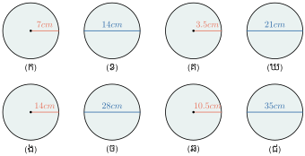
ក្នុងរូបខាងស្ដាំនេះចម្រៀកថាសពីរ \(\displaystyle OAB\) និង \(\displaystyle OMN\) ដែល \(\displaystyle OA = OB = 12cm\) ហើយ \(\displaystyle AM = BN = 8cm\) ។ គណនាផ្ទៃក្រឡាពណ៌ ( យក \(\displaystyle \pi = 3.14\) ) ។
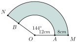
- ផ្ទៃក្រឡានៃចម្រៀកថាសដែលមានកាំមានរង្វាស់ \(\displaystyle 14cm\) គឺ \(\displaystyle 123.2cm^2\) ។ គណនាមុំផ្ចិតនៃចម្រៀកថាសនេះ ។ ( យក \(\displaystyle \pi = \frac{22}{7}\) )
\(\displaystyle OABC\) ជាចម្រៀកថាសដែលកាំមានរង្វាស់ \(\displaystyle 25cm\) និងមុំផ្ចិត នៃចម្រៀកថាសស្មើ \(\displaystyle 90^\circ\) ។ គណនាបរិមាត្រនៃចម្រៀក ថាសនេះ និងផ្ទៃក្រឡាពណ៌ ( យក \(\displaystyle \pi = 3.14\) ) ។
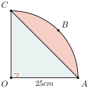
ចំណុច \(\displaystyle A, B, C\) និង \(\displaystyle D\) ស្ថិតនៅលើរង្វង់ \(\displaystyle O\) កាំ \(\displaystyle 14cm\) ។ រង្វង់ មួយមានអង្កត់ផ្ចិត \(\displaystyle AO\) ហើយកាត់តាមចំណុច \(\displaystyle A, P, O\) និង \(\displaystyle Q\) ( យក \(\displaystyle \pi = \frac{22}{7}\) ) ។ គណនា :
ផ្ទៃក្រឡានៃផ្ទៃឆូត
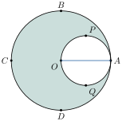
ខ្លឹមសារ៖ សៀវភៅពុម្ពគណិតវិទ្យាថ្នាក់ទី៧ របស់ក្រសួងអប់រំ យុវជន និងកីឡា · វាយអត្ថបទ គូររូបភាពឡើងវិញ និងរៀបចំលើអនឡាញដោយលោកគ្រូ សាន សុខលី សម្រាប់ការសិក្សាដោយឥតគិតថ្លៃ និងមិនរកប្រាក់ចំណេញ។ មិនមែនជាការបោះពុម្ពផ្លូវការរបស់ក្រសួងទេ។